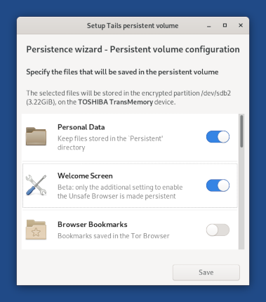

This release fixes many security vulnerabilities. You should upgrade as soon as possible.
New features
We disabled the Unsafe Browser by default and clarified that the Unsafe Browser can be used to deanonymize you.
An attacker could exploit a security vulnerability in another application in Tails to start an invisible Unsafe Browser and reveal your IP address, even if you are not using the Unsafe Browser.
For example, an attacker could exploit a security vulnerability in Thunderbird by sending you a phishing email that could start an invisible Unsafe Browser and reveal them your IP address.
Such an attack is very unlikely but could be performed by a strong attacker, such as a government or a hacking firm.
This is why we recommend that you:
- Only enable the Unsafe Browser if you need to log in to a captive portal.
- Always upgrade to the latest version of Tails to fix known vulnerabilities as soon as possible.
We added a new feature of the Persistent Storage to save the settings from the Welcome Screen.
This feature is beta and only the additional setting to enable the Unsafe Browser is made persistent. The other settings (language, keyboard, and other additional settings) will be made persistent in Tails 4.9 (July 28).

Changes and updates
Update Tor Browser to 9.5.1.
Update Thunderbird to 68.9.0.
Update Linux to 5.6.0. This should improve the support for newer hardware (graphics, Wi-Fi, etc.).
Fixed problems
Fix the Find in page feature of Thunderbird. (#17328)
Fix shutting down automatically the laptop when resuming from suspend with the Tails USB stick removed. (#16787)
Notify always when MAC address spoofing fails and the network interface is disabled. (#17779)
Fix the import of OpenPGP public keys in binary format (non armored) from the Files browser.
For more details, read our changelog.
Known issues
Only use the following characters in the administration password:
- a–z
- A–Z
- 1–9
- _@%+=:,./-
If you use spaces or other accentuated characters, like àéïøů, your will not be able to type your administration password again in your Tails session, unless you type single quotes ' around it.
For example, if you set the administration password: née entrepôt über señor, you would have to type 'née entrepôt über señor'. (#17792)
The keyboard layout is not applied to the Welcome Screen when automatically selected after you changed the language. (#17794)
For example, setting the language to French seems to change the keyboard layout to French (AZERTY) but this change is not applied to the Welcome Screen. This can prevent you from typing the passphrase of your Persistent Storage.
To change the keyboard layout of the Welcome Screen, select your keyboard layout manually from the Keyboard Layout drop-down menu. Do so even if they keyboard layout is automatically selected after you changed the language.
Tails fails to start with the toram boot option. (#17800)
To start with the toram boot option, specify both the toram and the fromiso=/dev/true boot options.
See the list of long-standing issues.
Get Tails 4.8
To upgrade your Tails USB stick and keep your persistent storage
Automatic upgrades are available from Tails 4.2 or later to 4.8.
If you cannot do an automatic upgrade or if Tails fails to start after an automatic upgrade, please try to do a manual upgrade.
To install Tails on a new USB stick
Follow our installation instructions:
All the data on this USB stick will be lost if you install instead of upgrading.
To download only
If you don't need installation or upgrade instructions, you can download Tails 4.8 directly:
What's coming up?
Tails 4.9 is scheduled for July 28.
Have a look at our roadmap to see where we are heading to.
We need your help and there are many ways to contribute to Tails (donating is only one of them). Come talk to us!